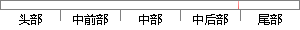

分为基于 图像 灰度信息的配准和基于特征的配
片段位置图

相似结果
相似片段：
是对不同时间、不同传感器或不同视角的同一场景的两幅或多幅图像进行空间变换处理,使得各个图像在几何上能够匹配对应起来[1-2]。图像配准方法可分为基于灰度信息的配准和基于特征的配准两种方法[3]。前者主要取决于图像灰度信息的统计特性,由于直接利用全部 下载全文 更多同类文献 PDF全文下载 CAJ全文下载 (如何获取全文？ 欢迎：
| 对比库： | WriteCheck云资源库 |
| 来源： | cnki.com.cn 查看来源 |
| 发布时间： | 2016-12-14 |
| 相似率 | 100% （严重抄袭） |